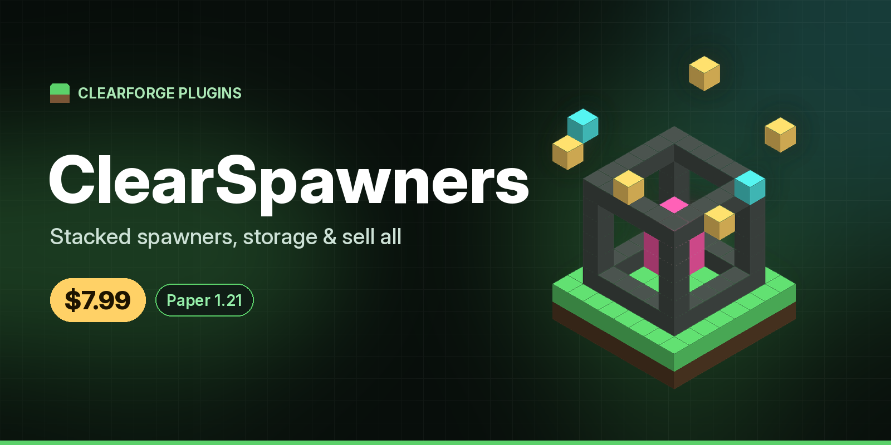

ClearSpawners
No mob lag, just loot. Spawners placed by players stop spawning mobs and fill a storage menu instead.
$7.99

Why ClearSpawners
- No mob lag: drops and XP are generated straight into storage, so no mobs spawn.
- Stacking: right-click a spawner with another of the same type, or place one onto it, up to a max you set.
- Sell all: pays through Vault with a price per item. Without Vault the button is greyed out.
Features
- Per-mob drop table, interval and XP in config.yml, multiplied by stack size
- Ships with pig, cow, chicken, zombie, skeleton, spider, creeper, blaze and iron golem
- Storage menu: see stored items and their value, then Collect items, Collect XP or Sell all
- Silk touch pickup (or clearspawners.pickup) gives back a spawner item that keeps its stack
- Only generates when a player is nearby (configurable), with storage caps per item and for XP
- Explosion protection (configurable)
- Data saved in spawners.yml and kept across restarts
Commands & permissions
| Command | Permission |
|---|---|
| Open storage, stack spawners | clearspawners.use (everyone by default) |
| Sell all | clearspawners.sell (everyone by default) |
| Pick up without silk touch | clearspawners.pickup (ops by default) |
/spawners give <player> <mob> [amount] [stack], /spawners reload | clearspawners.admin (ops by default) |
Dependencies
None to run. Vault and an economy plugin (e.g. EssentialsX) are needed for Sell all.
Tested
Tested on Paper 1.21.4 with a bot, Vault 1.7.3 and EssentialsX 2.22.0: a pig spawner was stacked to 3 (by right-click and by placing onto it), drops and XP built up, Collect items and Collect XP worked, Sell all raised /balance from $0 to $60, silk touch gave back a stack-3 spawner that placed again as stack 3, and everything survived a restart with no pigs spawned. Pickup by permission without silk touch, breaking without silk touch, explosion protection and mob types other than pig were not bot-tested.
Example config
# ClearSpawners. Spawners placed by players (or given with /spawners give) make virtual drops
# instead of mobs. Right-click a spawner to open its storage. Data is kept in spawners.yml.
max-stack: 10
# Only generate drops when a player is within this many blocks (0 = always, while the chunk is loaded).
player-range: 16
# Max of each item a single spawner stores. Generation of that item pauses when full.
max-storage-per-item: 2304
max-xp-storage: 10000
# Pickup: silk touch tool keeps the spawner (and its stack). clearspawners.pickup works without silk touch.
silk-touch-pickup: true
# Drop stored items on the ground when a spawner is picked up or broken (false = they are lost).
drop-storage-on-break: true
# Protect spawners from explosions.
explosion-proof: true
# Drop tables. interval = seconds between drops. Amounts are per spawner and multiplied by stack size.
# drops: MATERIAL: "min-max" (or a single number). xp = XP per interval.
mobs:
PIG: {interval: 20, xp: 3, drops: {PORKCHOP: "1-3"}}
COW: {interval: 20, xp: 3, drops: {BEEF: "1-3", LEATHER: "0-2"}}
CHICKEN: {interval: 20, xp: 3, drops: {CHICKEN: "1", FEATHER: "0-2"}}
ZOMBIE: {interval: 20, xp: 5, drops: {ROTTEN_FLESH: "0-2"}}
SKELETON: {interval: 20, xp: 5, drops: {BONE: "0-2", ARROW: "0-2"}}
SPIDER: {interval: 20, xp: 5, drops: {STRING: "0-2", SPIDER_EYE: "0-1"}}
CREEPER: {interval: 20, xp: 5, drops: {GUNPOWDER: "0-2"}}
BLAZE: {interval: 25, xp: 10, drops: {BLAZE_ROD: "0-1"}}
IRON_GOLEM: {interval: 40, xp: 0, drops: {IRON_INGOT: "3-5", POPPY: "0-2"}}
# Sell prices per item for "Sell all" (needs Vault and an economy plugin). Items not listed can't be sold.
prices:
PORKCHOP: 2.0
BEEF: 2.0
LEATHER: 3.0
CHICKEN: 1.5
FEATHER: 0.5
ROTTEN_FLESH: 0.5
BONE: 1.0
ARROW: 0.5
STRING: 1.0
SPIDER_EYE: 2.0
GUNPOWDER: 3.0
BLAZE_ROD: 8.0
IRON_INGOT: 5.0
POPPY: 0.2
messages:
prefix: "<dark_gray>[<green>Spawners</green>]</dark_gray> "
Requirements
- Paper 1.21.4
- Java 21
- Vault and an economy plugin (only for Sell all)
Installation
Full walkthrough: ClearSpawners setup guide.
- Stop your server.
- Put
ClearSpawners-1.0.0.jarin yourplugins/folder. - Start the server so
plugins/ClearSpawners/config.ymlis created. - For Sell all, install Vault and an economy plugin (e.g. EssentialsX).
- Edit max stack, drop tables, intervals, XP and prices in the config, then run
/spawners reload.
Support
Bugs or questions: open an issue on GitHub.
Licence
One server network per purchase. No redistribution or resale. See the terms.
Buy ClearSpawners — $7.99
Instant download
Pay with Bitcoin through Sell.app and your ClearSpawners download is delivered automatically as soon as the payment is confirmed.
Checkout is handled by Sell.app. Your download link appears on the order page and is emailed to you.